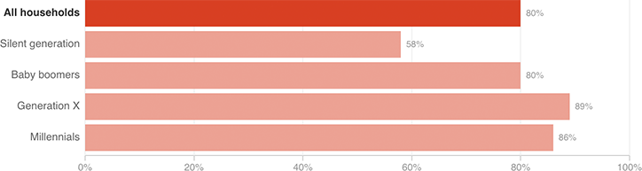

Share Of Households With Debt In 2014, By Generation

Notes
This report defined members of the silent generation as born between 1928 and 1945; baby boomers, between 1946 and 1964; Generation X, between 1965 and 1980; and Millennials, between 1981 and 1997.